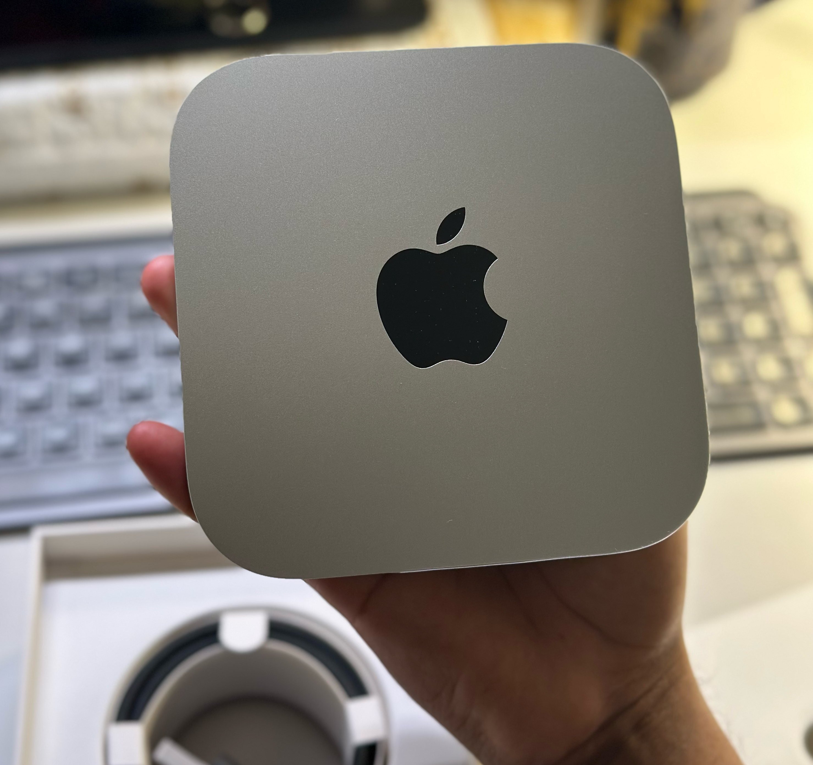
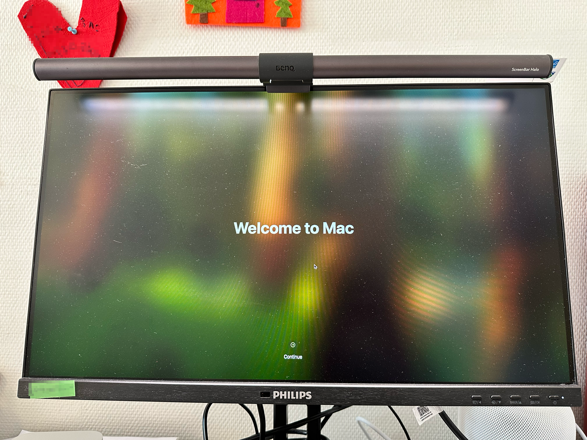
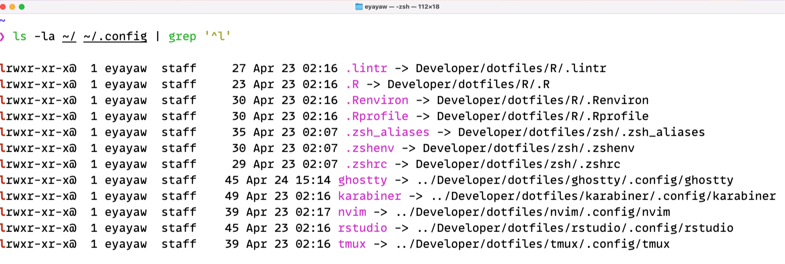

Setting up a new Mac
Automation with Homebrew, dotfiles, and macOS defaults
I finally treated myself to a new Mac Mini for completing my PhD. In the past, setting up a new machine meant hours of manual downloading, clicking through installers, and tediously configuring apps and tweaking default OS settings. However, over time I learned setup automation, so now I can get everything up and running quickly with minimal manual effort.
What have I learned? Writing a set of shell scripts that handle everything from app installation to config, and setting default settings. This post walks through my approach to programmatically setting up a new Mac and the tools that make it possible.


./bootstrap.shTL;DR
Apps and CLI tools: I use Homebrew as my package manager to install everything from 1Password and Raycast to dev tools like Python, R, and DuckDB. For Mac App Store apps, I use mas.
Configs: I manage my configs with GNU Stow, which creates symlinks from my version-controlled dotfiles to the proper locations in my ${HOME} directory.
macOS defaults: I apply custom macOS settings through a script that changes some default options (like enabling list view in Finder and disabling “natural” scrolling).
The automation process
Package managers are the key to automation. I remember the days when I used to spend hours manually downloading and installing apps until I discovered tools like apt for Ubuntu and Homebrew for macOS. Another milestone was when I discovered about dotfiles, configs that you can version-control and use across machines.1
By combining package management with dotfiles, and macOS default settings, I created a system that helps me set up a new machine with all my favorite tools and configs in a fraction of the time it used to take me. There are three main components of this system: (1) package management with Homebrew, (2) GNU Stow-ed dotfiles, and (3) customizing macOS defaults.
Component 1: Package Management with Homebrew
macOS, unlike many Linux distros, doesn’t come with a built-in package manager. Homebrew fills this (“the missing package manager”) gap, becoming the first tool I install on any new Mac:
/bin/bash -c "$(curl -fsSL https://raw.githubusercontent.com/Homebrew/install/master/install.sh)"Homebrew lets me install both GUIs (casks) and cli tools (formulae) and through simple commands. Here is how I install my favorite packages via Homebrew:
Core tools
# Password and secrets management
brew install --cask 1password
brew install 1password-cli
# Application launchers (with window management, clipboard history and other features)
brew install --cask raycast alfred
brew install --cask arc # modern browser
brew install --cask karabiner-elements # for keyboard customization
# Terminal environment
brew install --cask ghostty # terminal emulator
brew install git # not to interfere with the system: macOS comes with a pre-installed version
brew install starship # shell prompts
brew install tmux # terminal multiplexer
brew install stow # for dotfiles managementCommand-line utilities
brew install tldr # simplified man pages
# Better alternatives to standard tools
brew install fzf # a fuzzy finder
brew install bat ripgrep fd # modern alts for cat, grep, find
# Additional CLI tools
brew install gh # GitHub CLI
brew install mas # for Mac App Store appsDev environments
# Programming languages
brew install --cask r # the cask version is recommended, https://x.com/jimhester_/status/1374342249568481288
brew install python lua
# Package managers and code quality tools
brew install uv ruff # Python package manager and linter
brew tap r-lib/rig && brew install --cask rig # R version manager
# Editors and IDEs
brew install --cask visual-studio-code zed # modern code editors
brew install --cask visual-studio-code@insiders zed@preview # unstable versions
brew install --cask rstudio positron # R & Python IDEs by Posit
brew install neovim # for btwI also install typefaces (mostly coding fonts). My fonts installer script copies my purchased fonts to ~/Library/Fonts/, including MonoLisa and Berkeley Mono. The free ones can be installed via Homebrew, such as JetBrains Mono and Monaspace.
# Fonts
brew install --cask font-{jetbrains-mono,monaspace,ibm-plex-mono}
brew install --cask font-{fontawesome,inter,open-sans,roboto}I also install Mac App Store apps, mostly not free:
# Mac App Store apps (using mas)
mas install 441258766 # Magnet
mas install 424389933 # Final Cut Pro
mas install 1091189122 # Bear NotesAs an academic, I use Zotero for reference management (sometimes as read-later storage, and has an impressive PDF reader). For academic citations, I use Better BibTex to automatically generate citations keys in Zotero. I write a script to install this addon, instead of manually installing it.
The citation key formula I use is authEtal(sep='_').lower+year.prefix(_), which generates citation keys like glaeser_2010, glaeser_gyourko_2009, and glaeser_etal_2020 for single, two, and three or more authors, respectively.
You can read this on how to configure the citation key generator.
Lastly, I wrote a script that installs tpm, a plugin manager for tmux, inspired by typecraft-dev’s crucible.
All of these installations are automated in a single script scripts/install/install.sh, which sources the relevant scripts. If you’re curious about in the full list of my favorite tools, see here.
Component 2: Configuration Management with Dotfiles
After installing apps, the next challenge is configuring them. This is where dotfiles come in, which are configs (often hidden, starting with a dot, hence the name) that control how apps behave.
Dotfiles are simply text-based configs. Examples include: .zshrc for Zsh config, .gitconfig for Git preferences, and various configs for editors, terminal emulators, and other tools.
By storing these files in a version-controlled repository, we can easily track changes and sync configs across machines.
Managing dotfiles with GNU Stow
Managing my dotfiles was challenging, and I often lost them since they typically reside in the home directory, which I don’t sync with iCloud Drive. (Of course, you can!) Then I discovered GNU Stow, through Dreams of Autonomy’s video.
Stow creates symlinks from a repository (in my case located at ~/Developer/dotfiles/) to the locations where apps expect to find their configs, usually in the home directory (i.e., ~) and its subdirectories such as .config.
Here is how I structure my dotfiles repository:
~/Developer/dotfiles/
├── zsh/ # Shell configs
│ ├── .zshrc
│ ├── .zshenv
│ └── .zsh_aliases
├── zed/ # Zed editor settings
│ └── .config/
│ └── zed/
│ ├── settings.json
│ └── keymap.json
├── git/
│ └── .gitconfig
└── ... other toolsNotice how the directory structure (for each package) mirrors where these files would normally live in my home directory.This is key to how Stow works.
To apply these configs, I simply run:
# or run from anywhere by adding the `--dir` flag with the location of your dotfiles
# in my case `--dir=${HOME}/Developer/dotfiles`
cd ~/Developer/dotfiles
stow --target=${HOME} zsh ghostty karabiner git tmux zed R rstudio
This screenshot shows Stow in action, where configs in my home directory (left side) are pointing to their actual location in my dotfiles directory (right side).
As shown in the screenshot above, Stow creates symbolic links from the appropriate locations in my home directory to the files in my dotfiles repository. When I update a config file in my dotfiles, the change is automatically reflected in the corresponding config file and hence the package that uses the config, and vice versa.
For example, here is a simplified version of my Zed config which is located at ~/Developer/dotfiles/zed/.config/zed/settings.json:
{
"base_keymap": "VSCode",
"vim_mode": true,
"relative_line_numbers": true,
"buffer_font_family": "MonoLisa",
"buffer_font_size": 15,
"ui_font_size": 15,
"theme": {
"mode": "system",
"light": "Zed Legacy: Solarized Light",
"dark": "One Dark"
},
"wrap_guides": [72, 80, 120],
"soft_wrap": "editor_width"
}With Stow, this file lives in my dotfiles repository but appears to Zed as if it’s in the expected ~/.config/zed/ location.
Component 3: Customizing macOS Defaults
macOS comes with many default settings that I immediately change on a new system. Rather than clicking through System Preferences, I use a script that modifies these settings programmatically, which are mostly adapted from Mathias Bynens’ dotfiles.
# Use list view in Finder by default
defaults write com.apple.finder FXPreferredViewStyle -string "Nlsv"
# Disable "natural" scrolling (which feels unnatural to many)
defaults write NSGlobalDomain com.apple.swipescrolldirection -bool false
# Faster keyboard repeat rate
defaults write NSGlobalDomain KeyRepeat -int 1
defaults write NSGlobalDomain InitialKeyRepeat -int 10
# Show hidden files in Finder
defaults write com.apple.finder AppleShowAllFiles -bool true
# Disable automatic capitalization, smart quotes, etc.
defaults write NSGlobalDomain NSAutomaticCapitalizationEnabled -bool falseThese commands modify the property list files that store macOS preferences. After running my settings script, I restart the machine to ensure all changes take effect.
Putting it all together
My complete setup process is orchestrated by a single bootstrap.sh script that:
- Installs Homebrew
- Installs all packages, fonts, and apps
- Sets up plugin managers for tools like tmux
- Configures macOS default settings
- Deploys all dotfiles using Stow
Here is the actual workflow:
- Boot up the new Mac.
- Clone my dotfiles repository:
git clone --depth=1 https://github.com/eyayaw/dotfiles.git ~/Developer/dotfiles, macOS comes with a pre-installed version of Git. - Run the bootstrap script:
cd ~/Developer/dotfiles && ./bootstrap.sh.2 - After a reboot, everything is ready to go.
Installing Homebrew takes longer than I would like because of the Command Line Tools and other dependencies (I assume).
You may be asked for your password repeatedly, so you might need to stay nearby.
You can install Homebrew in unattended mode by setting NONINTERACTIVE=1. If you want to install everything unattended, there may be a way through providing the password upfront (in bash set -v and additional hack), but I couldn’t get it to work in my setup.
The entire process takes less than an hour, most of which is just waiting for downloads to complete. When I return to the computer, all my tools are installed and configured exactly the way I like them.
While saving time is the most obvious benefit, this approach offers other advantages. My dev environment is familiar across machines, the scripts serve as documentation of my setup. I can easily add new tools or update configs. If something goes wrong, I can quickly restore my environment because my dotfiles are version-controlled.
Conclusion
Setting up a new machine used to be a gruelling, unproductive task. Now it’s a matter of running a single script and taking a coffee break. This automation has dramatically reduced the friction of moving to new machine and ensures I immediately have access to my dev tools on a fresh system.
The tools outlined here—Homebrew, GNU Stowed dotfiles, and defaults scripts—form a powerful trio for Mac setup automation. If you’re still setting up machines manually, I encourage you to explore automation. There are hundreds of amazing dotfiles on GitHub.
How do you set up your dev environment? I would love to hear about your approach and favorite tools in the comments!
Thank you for stopping by!
Eyayaw
Expand the appendix if you want to skim through simplified versions of some of my configs.
Appendix
Karabiner-Elements
I use Karabiner-Elements for keyboard customization, with a “hyper key” + sublayer workflow. My karapyner repository includes Python scripts for configuring Karabiner with:
- Caps Lock as a dual-function key (Escape when tapped, Hyper Key when held)
- Custom sublayers for different categories of actions:
hyper + b: Browser commandshyper + o: Open appshyper + w: Window managementhyper + r: Raycast commands
For more on this approach, check out Max Stoiber’s excellent video.
R
My R setup is made up of R default options and environment variables, and linting rules for the lintr package.
# .Rprofile
options(
prompt = "R> ",
continue = " ",
example.ask = TRUE,
warnPartialMatchArgs = TRUE,
repos = c(
rspm = "https://packagemanager.rstudio.com/all/latest",
CRAN = "https://cran.r-project.org"
),
# data.table options
datatable.print.colnames = "auto",
datatable.print.class = TRUE,
datatable.optimize = TRUE
)# .Renviron
R_MAX_VSIZE=48Gb# .lintr
linters: linters_with_defaults(
assignment_linter = NULL,
line_length_linter = line_length_linter(110L),
commented_code_linter = NULL
)
encoding: "UTF-8"Everything else can be found in the dotfiles repo.